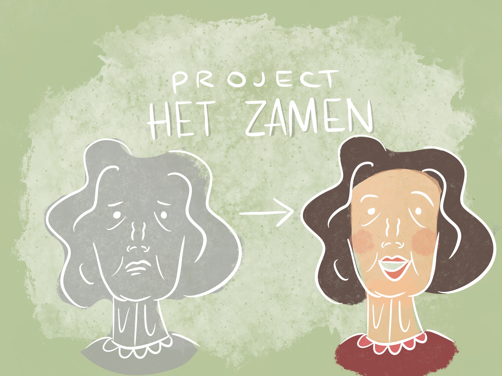

Greta Zanin
UX Designer and Illustrator
Shared Spaces

About the project
Project Shared Spaces is an ongoing group project started on February where students are asked to design a solution for patients affected with dementia.
Our goal is to improve these people's lifestyles and make them move more.
So far we've been researching our target group using different methods, such as desk research, fly on the wall (observation), interviews with activities that involve the patients as much as possible. On a second phase, once we'll gather enough data, we'll focus on coming up with a product that will hopefully enhance these people's lives.
Here below you can find some visuals we made according to our research, which helps us empathizing more with our target group.
While here I explain more about our client (Het Zamen) and what our future steps are going to be.
Creating an Experience
One of the methods we worked on was
We decided to create a sort of game that consisted in taking fellow students home, to their country of origin. Since the map would be projected on the floor, people’s task would be walking one of their classmates’ face to the country they belong to.
The tool used to create this experience was Processing.
Here you can find the video of the experience we created.